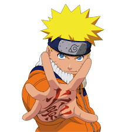
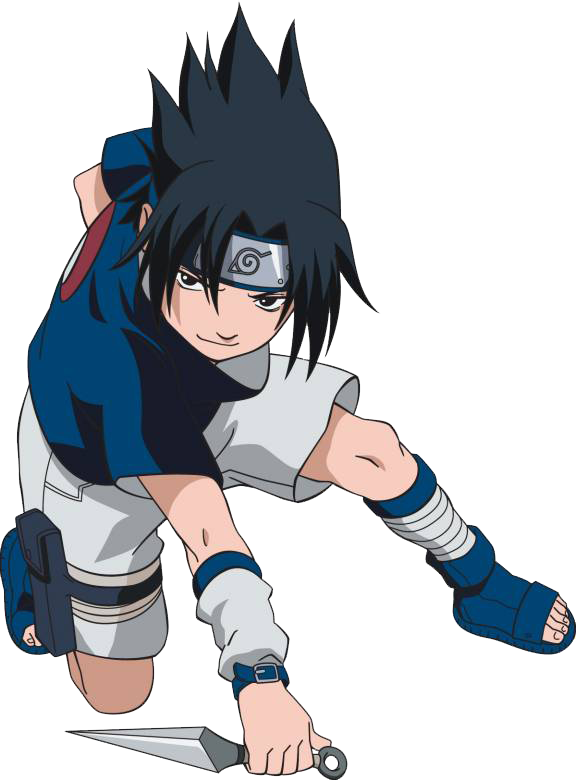

Naruto Uzumaki
Naruto is a ninja-in-training whose wild antics amuse his teammates. But he's completely serious about one thing: becoming the world's greatest ninja. As the battle against the Tailed Beast-targeting Akatsuki rages on, the heroic sibling battle between Sasuke and Itachi eventually concludes.
Kakashi Hatake
Kakashi is a fit and relatively tall man, with fair skin, spiky silver hair often oriented to his left side, and dark grey eyes, traits that he inherited from his father; he has a small vertical scar running over his left eye (which was soon replaced by a Sharingan).
Gaara

Gaara is a sharp and innovative fighter. His large array of sand-based jutsu are crafted by and unique to him. He has an eye for detail, able to quickly identify his opponent's vulnerabilities, and acts on his observations with his versatile sand.
Sakura Haruno

As her core, Sakura is compassionate, determined and courageous, willing to sacrifice herself and combat those she knows to be superior to her to defend her team. She has shown that despite being overcritical, overbearing, hot-tempered and blunt at times, especially with Naruto, she can be supportive of her friends.
Sasuke Uchiha
Sasuke bears a strong resemblance to Izuna Uchiha: he has black eyes and spiky black hair with a blue tint. Sasuke's hair is long and has hung over his face as bangs since he was a child, which as he gets older he allows to grow longer and, in turn, cover more of his face.